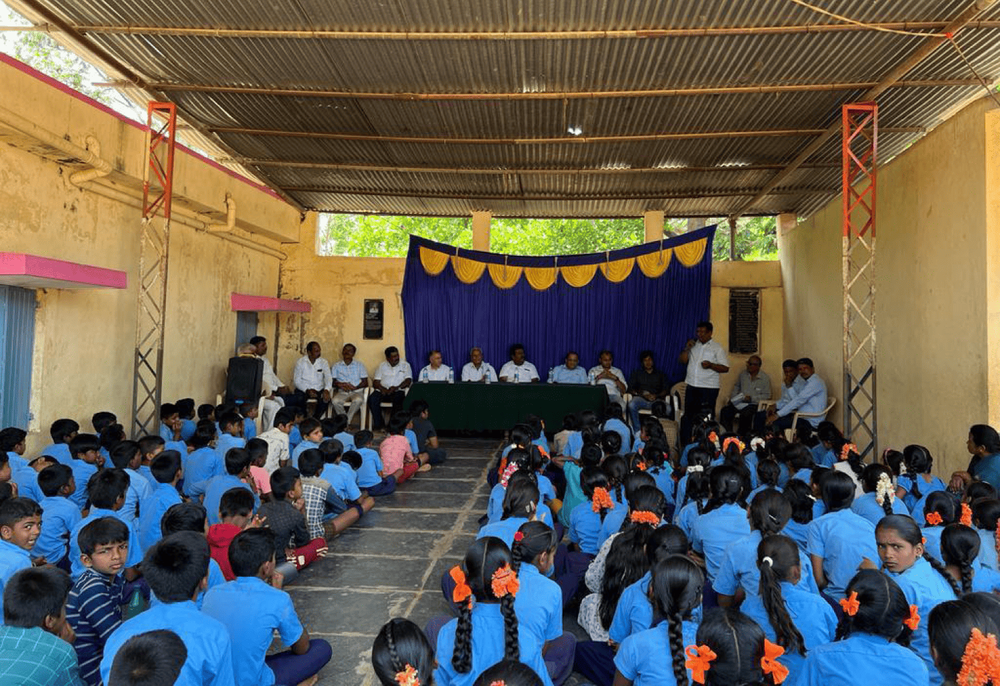
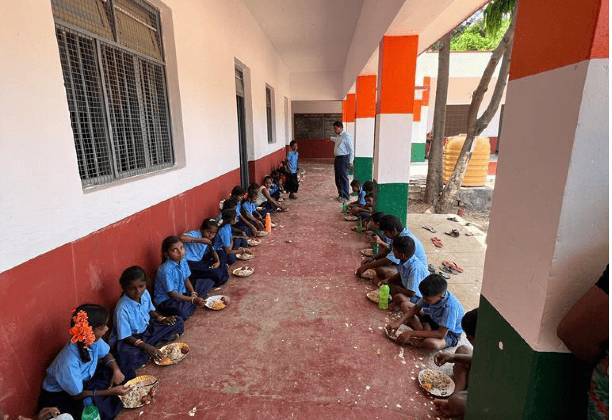
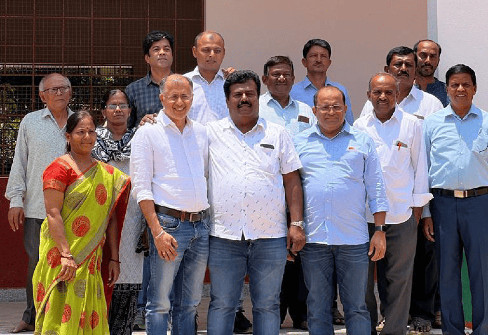
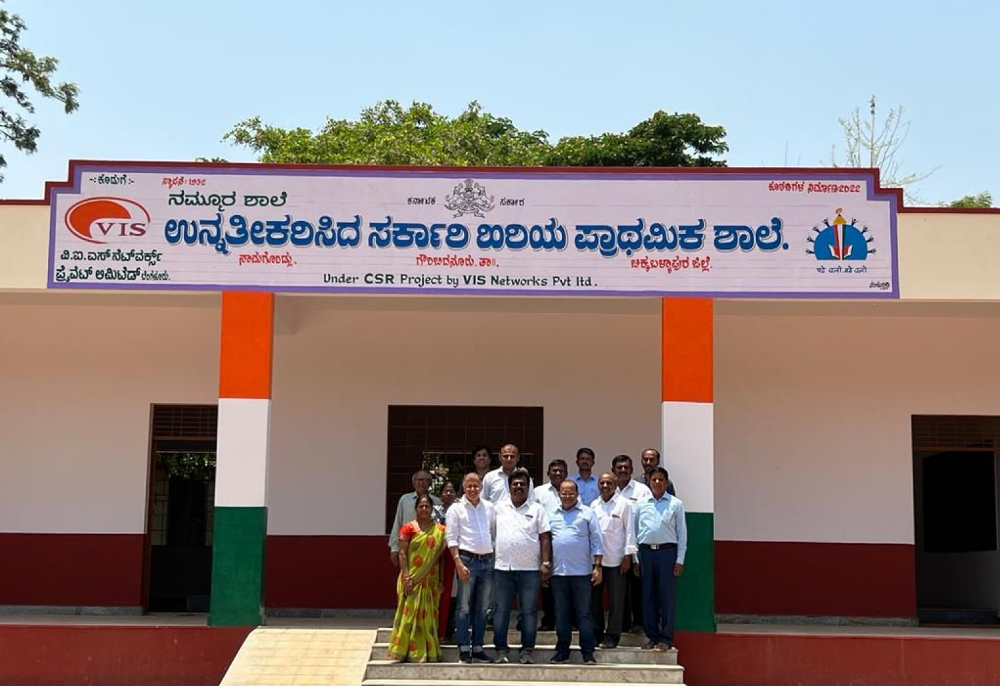

Education is the backbone of our society, and creating safe, conducive learning environments is essential to nurturing young minds.
In line with our commitment to fostering quality education, our recent CSR initiative focused on reconstructing the deteriorating structure of the Government School in Namagondlu Village, Chikkaballapur, near Bangalore. The building had become worn out over time, with classrooms that lacked the safety and comfort that students need to thrive.
Through this project, we aimed to provide a fresh start for the school — with a secure, sturdy structure that meets the needs of both students and teachers. This project is a testament to our belief in the transformative power of education, and we look forward to further supporting initiatives that empower communities through learning.
Gallery



